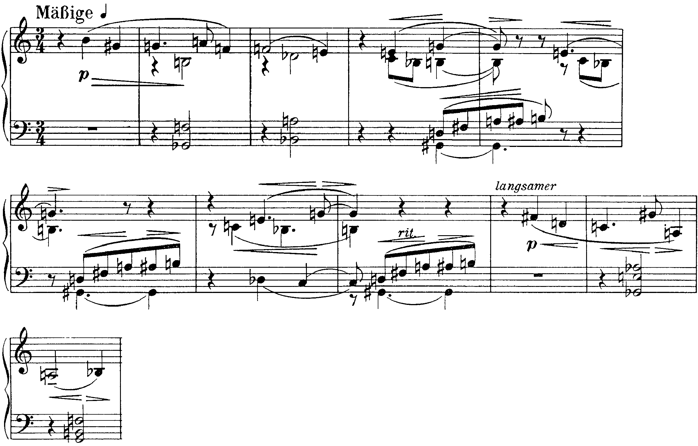

Le prime undici battute dei Drei Klavierstücke op. 11 (1909): la tonica non c’è più, la coerenza sì, e si lascia misurare.
La mia sola intenzione è: non avere alcuna intenzione!
A. Schönberg, lettera a F. Busoni del 24 agosto 1909, in G. Salvetti, La nascita del Novecento, p. 177
B4Oltre la tonalità, lezione 23: il sistema cromatico e la dodecafonia, pp. 262–266 · D. D’Urso, C. Bertolini, Il linguaggio della musica, 5° anno.
Atonalità. Un sistema «basato su un uso libero dei dodici suoni della scala senza che a nessuno di essi venga attribuito un valore gerarchico particolare»; i compositori che lo praticarono «si resero conto ben presto della necessità di stabilire nuovi criteri alternativi alle regole del linguaggio tonale, necessari per garantire coerenza e unitarietà» (D’Urso, Bertolini, p. 262).
Atonalità libera. La fase, fra il 1908 e i primi anni Venti, in cui Schönberg e i suoi allievi scrivono senza centro tonale e senza un sistema che lo sostituisca: la coerenza nasce dentro ciascun pezzo, dalla ripetizione e dalla trasformazione di pochi intervalli.
Dodecafonia. Il «metodo per comporre con 12 suoni riferiti solo l’uno all’altro», elaborato da Schönberg negli anni Venti: un ordinamento dei dodici suoni, la serie, diventa la struttura di riferimento di tutto il brano (p. 262; unità 8, lezione 1).
I tre Klavierstücke op. 11 sono del 1909, l’anno dei Cinque pezzi per orchestra op. 16 e di Erwartung; Salvetti ne scrive: «Ogni aspetto del linguaggio musicale vi appare asimmetrico e distorto: la fraseologia si spezza, anche per la continua escursione in registri lontani; il valore materico degli accordi prevale su qualsiasi logica di tensione-distensione» (La nascita del Novecento, p. 187). Lo stesso Salvetti avverte che quel valore improvvisatorio è «assolutamente non pre-dodecafonica nel suo significato» (p. 187): fra l’op. 11 e la serie passano quindici anni, e la serie non è lo scopo dell’atonalità libera, ma la risposta a un problema che l’atonalità libera aveva aperto.
Chiamare «dodecafonica» ogni musica senza tonalità, o «atonale» ogni musica molto dissonante. L’op. 11 non ha serie; la Kammersymphonie op. 9 (unità 6, lezione 8), con tutti i suoi accordi per quarte, ha ancora una tonica. Si nomina il sistema solo dopo averlo verificato sulla partitura.

Il pezzo è scritto su due righi e quasi sempre a quattro voci reali, due per mano, che si possono seguire come in una scrittura corale: una melodia nella voce superiore della destra, una seconda voce sotto di essa, e alla sinistra accordi di due suoni o arpeggi sopra un basso. Le undici battute trascritte formano la prima sezione: tre frasi (bb. 1–3, 4–8, 9–11) separate da pause o da cambiamenti di tempo, e chiuse dall’indicazione viel schneller della b. 12, che apre una sezione di tutt’altro carattere.
Cellula. Un gruppo di due o tre suoni definito dai suoi intervalli e non dalla sua posizione in una tonalità; nell’op. 11 «l’intervallo e la sua possibile trasformazione (inversione o mutazione) è alla base della costruzione», e il pezzo «si apre con la presentazione di tre cellule intervallari che diverranno elementi strutturali dell’intero lavoro» (E. C. Natoli, Percorsi di analisi musicale, p. 274).
Classe di altezze. Tutte le note dello stesso nome, in qualunque ottava e con qualunque ortografia enarmonica, numerate da 0 (do) a 11 (si): un accordo o un frammento melodico ridotto a classi di altezze si confronta con un altro indipendentemente dal registro (I. Bent, Analisi musicale, pp. 127–128). La riduzione alla forma più stretta, con la sigla di Forte (3-3, 3-5…), è l’argomento della lezione seguente.
La melodia delle bb. 1–3 è una linea di sei suoni, si4–sol♯4–sol4–la4–fa4–mi4, che non ripete nessun suono e non ne privilegia nessuno: comincia in levare sul secondo movimento, con un si4 e un sol♯4 di un quarto ciascuno, scende di semitono al sol4 (semiminima puntata), sale di tono al la4 (croma), scende di terza maggiore al fa4 e di semitono al mi4. Natoli vi riconosce tre cellule: la terza minore discendente si–sol♯ (con il semitono che la prolunga, sol♯–sol), il gruppo sol–la–fa (seconda maggiore ascendente, terza maggiore discendente) e il semitono discendente fa–mi. Ciò che rende la frase coerente non è un centro tonale ma il ritorno degli stessi intervalli, e la frase finisce non su una tonica ma su una terza maggiore discendente seguita da un semitono, lo stesso gesto con cui era cominciata la b. 2.
Sotto la melodia entrano, sul secondo movimento delle bb. 2 e 3, due accordi di tre suoni tenuti per due movimenti. Il primo, sol♭2–fa3–si3, sovrappone una settima maggiore e un tritono: in classi di altezze è {5, 6, 11}, un semitono e un tritono, la classe 3-5. Il secondo, si♭2–la3–re♭4, ha la stessa disposizione (una settima maggiore al grave, poi una terza) ed è {9, 10, 1}, la classe 3-3: e 3-3 è anche la classe della cellula si–sol♯–sol della b. 1 ({7, 8, 11}), di cui l’accordo della b. 3 è l’esatta trasposizione un tono sopra (sol→la, sol♯→si♭, si→do♯). La prima cellula melodica diventa così, due battute dopo, un accordo: la stessa classe di altezze vale in orizzontale e in verticale, e il legame fra melodia e armonia non passa più per un grado della scala ma per un gruppo di intervalli.
Cercare una tonalità nella melodia delle bb. 1–3 (mi minore, per la cadenza fa–mi) e liquidare il resto come «dissonanza». Il mi4 finale cade sopra si♭2–la3–re♭4, un accordo che non contiene il mi e che non è una dominante: la nota finale chiude la linea, non la funzione. Si descrive la frase con i suoi intervalli.
La seconda frase comincia con le stesse note della prima, ma in un altro ordine e in un’altra funzione. Il sol♯, seconda nota del pezzo, scende all’ottava grave e diventa un pedale: sol♯2 tenuto nelle bb. 4–5, ribattuto e tenuto nelle bb. 6 e 8. Sopra di esso la voce superiore della sinistra sale in crome re3–fa♯3–la3–la♯3–si3, e il si3 finale, sopra il sol♯2, restituisce capovolto il primo intervallo del pezzo: non più si–sol♯ discendente, ma sol♯–si ascendente. Natoli legge allo stesso modo la mano destra: nella voce inferiore do4–si♭3–si3 sono la seconda maggiore discendente e il semitono ascendente, cioè le inversioni del primo intervallo della cellula sol–la–fa e della cellula fa–mi; l’arpeggio della sinistra presenta in successione una terza maggiore, una terza minore e una seconda minore (pp. 274–275).
L’arpeggio torna tre volte: in crome distese sopra il pedale (bb. 4–5, p, crescendo e diminuendo), compresso in una battuta dopo una pausa di croma (b. 6), e di nuovo dopo il re♭3–do3 discendente della b. 7, con rit. (b. 8). È l’elemento di stabilità della frase, e la sua stabilità non viene da un’armonia ma dalla ripetizione: lo stesso profilo, le stesse altezze, lo stesso registro. Contato in classi di altezze, l’arpeggio con il suo pedale è l’insieme {2, 6, 8, 9, 10, 11}, classe 6-Z39; la melodia delle bb. 1–3 è {4, 5, 7, 8, 9, 11}, classe 6-Z10. Le due classi non sono trasposizioni né inversioni l’una dell’altra, ma hanno lo stesso vettore intervallare, 333321: contengono lo stesso numero di semitoni, di toni, di terze minori e maggiori, di quarte e di tritoni. È la relazione che la teoria chiama «zeta-correlazione», e Bent osserva che quando un brano usa un insieme di una coppia di questo tipo «molto spesso usa anche l’insieme zeta-corrispondente» (Analisi musicale, p. 129). La melodia della prima frase e l’accompagnamento della seconda hanno, letteralmente, lo stesso contenuto intervallare in due forme diverse.
Sopra il pedale, la destra conserva la scrittura a due voci: mi4–sol♯4 nella voce superiore (b. 4) e, dopo due pause, fa4 (b. 5) e sol4 (b. 6), tre suoni che risalgono per seconde dal fondo della prima frase; nella voce inferiore do4–si♭3–si3, ripetuto quasi identico nelle bb. 5 e 7. La b. 7 riprende la b. 4 con una variante (mi4 semiminima puntata, poi sol4 legato alla b. 8) e sostituisce all’arpeggio il basso re♭3–do3, che porta la terza ripresa dell’arpeggio. Il tempo rallenta (rit., b. 8) e la frase si interrompe su tre movimenti di pausa nella destra.
Prendere il sol♯2 per una tonica perché è tenuto. Un pedale tonale prolunga una funzione; qui il sol♯ non ha funzione, ha una posizione: è il suono più grave, il più lungo, e il primo intervallo del pezzo vi si riflette sopra. Si scrive «pedale di sol♯», e si dice che cosa vi accade sopra.
La terza frase rallenta (langsamer, p) e torna alla scrittura della prima: una melodia sola nella destra e due accordi della sinistra entrati sul secondo movimento. La melodia, fa♯4–re4 | do4 (semiminima puntata)–sol♯4–la3 | la3 (minima)–si♭3, scende di oltre un’ottava e chiude con un semitono ascendente, il rovescio del fa–mi che chiudeva la prima frase. Il primo accordo, sol♭2–mi3–la♭3 (b. 10), è la classe 3-6, tre suoni a distanza di tono come quelli della scala esatonale; è la stessa classe del sol–la–fa della b. 2, la seconda cellula della melodia. Il secondo, sol2–do3–fa3 (b. 11), sovrappone due quarte giuste: la classe 3-9, l’accordo per quarte della Kammersymphonie (unità 6, lezione 8), qui senza alcuna funzione di dominante.
Anche gli accordi che chiudono le tre frasi si rispondono: un accordo di semitono e tritono (b. 2), uno di semitono e terza (b. 3), uno di toni interi (b. 10), uno di quarte (b. 11). Nessuno è una triade, nessuno risolve. La sezione non si chiude con una cadenza ma con un cambiamento di tempo e di scrittura: alla b. 12, viel schneller, ppp, le figure in biscrome e il trillo di un’altra sezione.
Leggere sol–do–fa come «quarta e sesta» o come accordo sospeso di una tonalità. Nel contesto non prepara nulla: si descrive come accordo per quarte, classe 3-9, e si dice che lo stesso accordo, alla b. 1 dell’op. 19 n. 6 (lezione seguente), è uno dei due materiali di un pezzo intero.
Nella lettera a Busoni da cui viene la frase della copertina Schönberg scrive anche ciò che non gli riesce: «Vorrei una maggiore varietà di motivi e di figure prive di rassomiglianza melodica; vorrei che i ritmi e i metri fossero più liberi e più sciolti; vorrei liberarmi ancor più dalla ripetizione dei motivi» (Salvetti, p. 177). Le undici battute appena lette mostrano perché il programma è difficile: tolta la tonica, la coerenza viene proprio dalla ripetizione e dalla trasformazione di pochi intervalli, cioè da ciò di cui Schönberg vorrebbe liberarsi. I pezzi del 1909–1911 diventano brevissimi (l’op. 19, del 1911, è l’argomento delle lezioni 2, 7 e 9), e dopo il Pierrot lunaire (1912) la produzione si dirada per quasi dieci anni.
La risposta, negli anni Venti, è il «metodo per comporre con 12 suoni riferiti solo l’uno all’altro» (D’Urso, Bertolini, p. 262): un ordine dei dodici suoni fissato in partenza garantisce che nessun suono prevalga e fornisce il materiale da cui derivare tutto il brano (unità 8, lezione 1). Ma il metodo nasce dentro l’atonalità libera, non contro di essa. Allen Forte, analizzando l’op. 11 n. 1, vi individua un insieme-cardine di sei suoni, 6-Z44, che contiene le note corrispondenti alle lettere del nome di Schönberg (Es–C–H–B–E–G, cioè mi♭–do–si–si♭–mi–sol): un pezzo senza serie è già costruito su una collezione privilegiata (S. Pasticci, Teoria degli insiemi e analisi della musica post-tonale, nota 12). La serie renderà esplicito e obbligatorio ciò che qui è scelta.
Raccontare la serie come l’invenzione che «mette ordine» nel caos atonale. Le bb. 1–11 non sono un caos: hanno cellule, inversioni, un pedale, una coppia di insiemi con lo stesso vettore. Ciò che manca all’atonalità libera non è l’ordine, è un principio che valga per un pezzo lungo.
Scrivi in classi di altezze la melodia delle bb. 9–11 e i due accordi delle bb. 10 e 11; per ciascuno dei tre insiemi indica un altro punto delle bb. 1–8 in cui compare la stessa classe.
Tre frasi (bb. 1–3, 4–8, 9–11) a quattro voci reali. Una melodia di sei suoni costruita su tre cellule (si–sol♯, sol–la–fa, fa–mi); accordi di tre suoni che ripetono le classi delle cellule (3-3 alla b. 1 e alla b. 3, 3-6 alla b. 2 e alla b. 10); un pedale di sol♯ con un arpeggio che torna tre volte e inverte gli intervalli della prima frase; due collezioni di sei suoni zeta-correlate (6-Z10, 6-Z39); la chiusa su un accordo per quarte.
Si cerca ciò che torna: un intervallo, una cellula, una classe di altezze, un registro. Si dice dove torna, con la battuta, e in quale forma (trasposta, invertita, fatta accordo). L’atonalità libera non ha un sistema: ogni pezzo costruisce il suo, e l’analisi lo ricostruisce.
La lezione si chiude con il solfeggio: si canta la melodia delle bb. 1–3 (si–sol♯–sol–la–fa–mi), poi la stessa melodia appoggiandola ai due accordi suonati al pianoforte. La lezione seguente riduce i due accordi dell’op. 19 n. 6 alla forma primaria.
Compiti per la prossima volta
Scrivi nelle bb. 2–8 la cellula della b. 1 nella forma indicata sopra ogni battuta, con lo stesso ritmo.
Sul quaderno, a matita. La foto del lavoro finito va su Classroom. Nel Workbook: apri l’esercizio 7.1 ↗
Compiti per la prossima volta
n. 376 e n. 377 parlato · n. 378 e n. 379 cantato · n. 380 e n. 381 ritmico
Ogni pezzo a tempo, senza fermarti: il parlato a nomi, il cantato prendendo il primo suono dalla tastiera, il ritmico battendo la pulsazione.
Scrivi la melodia sul quaderno, in chiave di violino: otto battute in 4/4, la minore. Il primo suono è la. Prima il riferimento, poi tutto due volte, ogni coppia di battute due volte, il collegamento 1–4, 3–6 e 5–8, e tutto per controllare.
Il riferimento: accordo di tonica e primo suono
Il dettato · otto battute
Le sezioni (riferimento, tutto, le coppie, il collegamento) si ascoltano una per una e si ripetono quanto serve; le fasi fanno la procedura della classe, con gli annunci e le pause, da qualunque punto.
Sul quaderno scrivi in testa la sigla C5-D-U07-L1. Si corregge all’inizio della prossima lezione.
Compiti per la prossima volta
Scrivi un contrappunto di seconda specie (due note contro una) sopra il canto fermo, in modo dorico (finale re): otto battute. Comincia su una consonanza perfetta, alla cadenza la sensibile sale alla finale, niente quinte e ottave consecutive.
Sul quaderno, con la sigla C5-CP-U07-L1 in testa; la foto va su Classroom.
Realizza a quattro parti il basso senza numeri: sedici battute in 4/4, sol maggiore. Trova tu l’accordo di ogni nota (la regola dell’ottava è il punto di partenza) e scrivilo sotto; poi il soprano, poi le voci interne. Accordi che puoi usare: tutto quello studiato, e una modulazione a un tono vicino.
Sul quaderno, con la sigla C5-BD-U07-L1 in testa; la foto va su Classroom.
Armonizza a quattro parti il canto dato: sedici battute in 4/4, sol maggiore. Prima le cadenze, poi il basso per intero, e solo alla fine contralto e tenore. Accordi che puoi usare: tutto quello studiato, e una modulazione a un tono vicino.
Sul quaderno, con la sigla C5-CD-U07-L1 in testa; la foto va su Classroom.
Scritto: Una cellula, otto forme (Workbook, esercizio 7.1), sul quaderno; la foto va su Classroom. Solfeggio dal quaderno di lettura: parlato n. 376, 377; cantato n. 378, 379; ritmico n. 380, 381 (a tempo, senza fermarsi). Dettato C5-D-U07-L1 dalla pagina della lezione (sezioni da ascoltare, o le fasi della procedura guidata), sul quaderno con la sigla. Contrappunto di seconda specie sul canto fermo (C5-CP-U07-L1). Basso senza numeri da realizzare a quattro parti (C5-BD-U07-L1). Canto dato da armonizzare a quattro parti (C5-CD-U07-L1).
In classe
A nomi, a tempo, con la mano che batte. Chi si ferma riparte dalla battuta dopo.
Apri il n. 372 nel quaderno di lettura ↗ chiave di contralto · 4/4 · do maggiore
In classe
Si prende il tono dalla tastiera, si canta insieme; poi a gruppi.
Apri il n. 373 nel quaderno di lettura ↗ chiave di violino · 2/4 · mi minore
Apri il n. 374 nel quaderno di lettura ↗ chiave di violino · 4/4 · sol maggiore
In classe
Tutti insieme, battendo la pulsazione. Poi a file, due battute a testa.